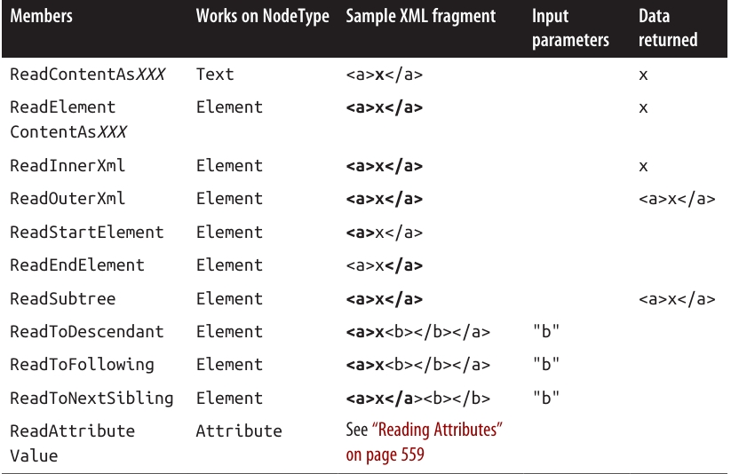
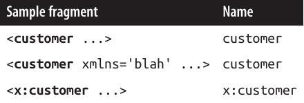

فصل یازدهم: سایر تکنولوژیهای XML و JSON
در فصل ۱۰، ما API مربوط به LINQ-to-XML و بهطور کلی XML را بررسی کردیم.
در این فصل، به سراغ کلاسهای سطح پایین XmlReader/XmlWriter و همچنین انواع دادههایی برای کار با JSON (JavaScript Object Notation) میرویم، که بهعنوان یک جایگزین محبوب برای XML شناخته میشود.
در ضمیمهی آنلاین 📎، ابزارهایی برای کار با XML Schema و Stylesheetها توضیح داده شدهاند.
XmlReader ⚡
XmlReader یک کلاس با کارایی بالا است که برای خواندن یک جریان (Stream) از XML بهصورت سطح پایین و فقط رو به جلو استفاده میشود.
به مثال زیر از یک فایل XML به نام customer.xml توجه کنید:
<?xml version="1.0" encoding="utf-8" standalone="yes"?>
<customer id="123" status="archived">
<firstname>Jim</firstname>
<lastname>Bo</lastname>
</customer>
برای ساختن یک شیء از نوع XmlReader، کافی است متد استاتیک XmlReader.Create را صدا بزنید و یک Stream، یا یک TextReader، یا یک رشتهی URI به آن بدهید:
using XmlReader reader = XmlReader.Create("customer.xml");
...
از آنجایی که XmlReader میتواند دادهها را از منابعی کند (مثل Streamها و URIها) بخواند، نسخههای asynchronous برای بیشتر متدهای خود ارائه میدهد تا بتوانید بهسادگی کدهای nonblocking بنویسید.
(ما موضوع asynchrony را بهطور کامل در فصل ۱۴ بررسی میکنیم.)
برای ساختن یک XmlReader که از رشته (string) بخواند:
using XmlReader reader = XmlReader.Create(
new System.IO.StringReader(myString));
شما همچنین میتوانید یک شیء از نوع XmlReaderSettings ارسال کنید تا گزینههای Parsing و Validation را کنترل کنید.
سه ویژگی مهم این کلاس که برای پرش از محتوای اضافی بسیار مفید هستند:
bool IgnoreComments // پرش از روی nodeهای توضیحی؟
bool IgnoreProcessingInstructions // پرش از روی دستورهای پردازشی؟
bool IgnoreWhitespace // پرش از روی فضاهای خالی؟
در مثال زیر، به Reader میگوییم که nodeهای فضای خالی را نادیده بگیرد، چون معمولاً در سناریوهای رایج مزاحم هستند:
XmlReaderSettings settings = new XmlReaderSettings();
settings.IgnoreWhitespace = true;
using XmlReader reader = XmlReader.Create("customer.xml", settings);
...
ویژگی مفید دیگر در XmlReaderSettings، گزینهی ConformanceLevel است.
مقدار پیشفرض آن Document است؛ یعنی به Reader میگوید انتظار یک سند XML معتبر با یک ریشهی واحد را داشته باشد.
اما این موضوع مشکلساز میشود اگر بخواهید فقط یک بخش داخلی از XML را بخوانید که شامل چندین node است:
<firstname>Jim</firstname>
<lastname>Bo</lastname>
برای اینکه این قطعه بدون خطا خوانده شود، باید مقدار ConformanceLevel را روی Fragment قرار دهید.
همچنین ویژگی دیگری به نام CloseInput در XmlReaderSettings وجود دارد که مشخص میکند وقتی Reader بسته میشود، آیا باید Stream زیربنایی هم بسته شود یا نه. (در XmlWriterSettings نیز ویژگی مشابهی به نام CloseOutput وجود دارد.)
مقدار پیشفرض CloseInput و CloseOutput برابر false است.
خواندن Nodeها 📌
واحدهای یک جریان XML، Nodeها هستند.
Reader جریان XML را بهترتیب متنی (بهصورت Depth-First) پیمایش میکند.
ویژگی Depth در Reader، عمق فعلی مکاننما (Cursor) را بازمیگرداند.
اولیهترین روش برای خواندن از XmlReader، استفاده از متد Read است.
این متد مکاننما را به node بعدی در جریان XML میبرد، تقریباً مشابه با متد MoveNext در IEnumerator.
- اولین فراخوانی به
Readمکاننما را روی اولین node قرار میدهد. - زمانی که
Readمقدار false بازمیگرداند، یعنی مکاننما از آخرین node عبور کرده و در این نقطه باید Reader بسته و کنار گذاشته شود.
دو ویژگی متنی (string) در XmlReader برای دسترسی به محتوای یک node وجود دارند:
- Name
- Value
بسته به نوع node، یکی از این دو یا هر دوی آنها مقداردهی میشوند.
مثال: خواندن همه Nodeها 👇
در این مثال، ما هر node موجود در جریان XML را میخوانیم و نوع هر node را چاپ میکنیم:
XmlReaderSettings settings = new XmlReaderSettings();
settings.IgnoreWhitespace = true;
using XmlReader reader = XmlReader.Create("customer.xml", settings);
while (reader.Read())
{
Console.Write(new string(' ', reader.Depth * 2)); // چاپ فاصله برای تورفتگی
Console.Write(reader.NodeType.ToString());
if (reader.NodeType == XmlNodeType.Element ||
reader.NodeType == XmlNodeType.EndElement)
{
Console.Write(" Name=" + reader.Name);
}
else if (reader.NodeType == XmlNodeType.Text)
{
Console.Write(" Value=" + reader.Value);
}
Console.WriteLine();
}
خروجی:
XmlDeclaration
Element Name=customer
Element Name=firstname
Text Value=Jim
EndElement Name=firstname
Element Name=lastname
Text Value=Bo
EndElement Name=lastname
EndElement Name=customer
🔎 توجه کنید که Attributes (ویژگیها) در پیمایش مبتنی بر Read لحاظ نمیشوند. (برای این موضوع به بخش Reading Attributes در صفحهی ۵۵۹ مراجعه کنید.)
XmlNodeType 🏷️
ویژگی NodeType از نوع XmlNodeType است که یک enum میباشد و شامل اعضای زیر است:
- None
- XmlDeclaration
- Element
- EndElement
- Text
- Attribute
- Comment
- Entity
- EndEntity
- EntityReference
- ProcessingInstruction
- CDATA
- Document
- DocumentType
- DocumentFragment
- Notation
- Whitespace
- SignificantWhitespace
خواندن Elementها در XML 🏷️📖
اغلب اوقات شما از قبل ساختار سند XML که میخواهید بخوانید را میدانید. برای سادهتر کردن این کار، XmlReader مجموعهای از متدها را فراهم کرده است که هنگام خواندن، فرض میکنند ساختار مشخصی وجود دارد. این متدها هم کد شما را سادهتر میکنند و هم بهطور همزمان بخشی از Validation را انجام میدهند ✅.
اگر هرگونه Validation شکست بخورد، XmlReader یک XmlException پرتاب میکند.
این استثنا ویژگیهای LineNumber و LinePosition را دارد که نشان میدهد خطا در کجا رخ داده است—ثبت (Log کردن) این اطلاعات برای فایلهای بزرگ XML بسیار ضروری است ⚠️.
متدهای پایهای برای خواندن عناصر
ReadStartElementبررسی میکند کهNodeTypeفعلی از نوع Element باشد و سپس متدReadرا صدا میزند. اگر یک نام مشخص کنید، بررسی میکند که با نام Element فعلی مطابقت دارد.ReadEndElementبررسی میکند کهNodeTypeفعلی از نوع EndElement باشد و سپس متدReadرا صدا میزند.
بهعنوان مثال، برای خواندن:
<firstname>Jim</firstname>
میتوانیم کد زیر را بنویسیم:
reader.ReadStartElement("firstname");
Console.WriteLine(reader.Value);
reader.Read();
reader.ReadEndElement();
متدهای خلاصهتر 🛠️
متد ReadElementContentAsString همهی مراحل بالا را یکجا انجام میدهد:
- یک start element
- یک text node
- و یک end element
سپس محتوای داخلی را بهصورت یک رشته بازمیگرداند:
string firstName = reader.ReadElementContentAsString("firstname", "");
آرگومان دوم به namespace اشاره دارد که در این مثال خالی است.
همچنین نسخههای تایپشدهای از این متد وجود دارد، مثل ReadElementContentAsInt، که خروجی را مستقیماً به نوع موردنظر Parse میکنند.
مثال کاملتر 📝
بیایید به سند XML زیر برگردیم:
<?xml version="1.0" encoding="utf-8" standalone="yes"?>
<customer id="123" status="archived">
<firstname>Jim</firstname>
<lastname>Bo</lastname>
<creditlimit>500.00</creditlimit> <!-- OK, we sneaked this in! -->
</customer>
و آن را اینطور بخوانیم:
XmlReaderSettings settings = new XmlReaderSettings();
settings.IgnoreWhitespace = true;
using XmlReader r = XmlReader.Create("customer.xml", settings);
r.MoveToContent(); // پرش از روی XML declaration
r.ReadStartElement("customer");
string firstName = r.ReadElementContentAsString("firstname", "");
string lastName = r.ReadElementContentAsString("lastname", "");
decimal creditLimit = r.ReadElementContentAsDecimal("creditlimit", "");
r.MoveToContent(); // پرش از روی کامنت
r.ReadEndElement(); // خواندن تگ پایانی customer
متد MoveToContent ⚡
متد MoveToContent بسیار کاربردی است. این متد از روی تمام بخشهای اضافی پرش میکند:
- XML declaration
- Whitespace
- Commentها
- Processing instructionها
همچنین میتوانید به Reader دستور دهید اکثر این کارها را بهصورت خودکار از طریق ویژگیهای موجود در XmlReaderSettings انجام دهد.
Elementهای اختیاری 🌀
در مثال قبلی، فرض کنید که <lastname> اختیاری باشد. راهحل ساده است:
r.ReadStartElement("customer");
string firstName = r.ReadElementContentAsString("firstname", "");
string lastName = r.Name == "lastname"
? r.ReadElementContentAsString() : null;
decimal creditLimit = r.ReadElementContentAsDecimal("creditlimit", "");
ترتیب تصادفی Elementها 🔀
مثالهای این بخش فرض میکنند که عناصر در فایل XML بهترتیب مشخصی قرار گرفتهاند.
اگر نیاز دارید با عناصری که به ترتیبهای مختلف میآیند کار کنید، سادهترین راه این است که آن بخش از XML را بهصورت یک X-DOM بخوانید. ما نحوهی این کار را در بخش Patterns for Using XmlReader/XmlWriter در صفحهی ۵۶۳ توضیح میدهیم.
Elementهای خالی ⬜
نحوهی برخورد XmlReader با Elementهای خالی میتواند یک دام خطرناک باشد 😅.
به این مثال توجه کنید:
<customerList></customerList>
در XML، این معادل است با:
<customerList/>
اما XmlReader این دو را متفاوت تفسیر میکند.
- در حالت اول، کد زیر بهخوبی کار میکند:
reader.ReadStartElement("customerList");
reader.ReadEndElement();
- اما در حالت دوم،
ReadEndElementیک استثنا پرتاب میکند چون از نظر XmlReader هیچ end element مجزایی وجود ندارد.
راهحل: بررسی کنید که آیا Element خالی است یا خیر:
bool isEmpty = reader.IsEmptyElement;
reader.ReadStartElement("customerList");
if (!isEmpty) reader.ReadEndElement();
در عمل، این مشکل فقط زمانی آزاردهنده است که Element موردنظر قرار است child elementها داشته باشد (مثل یک customer list).
برای Elementهایی که تنها متن ساده دارند (مثل firstname)، میتوانید کل این موضوع را با استفاده از متدهایی مثل ReadElementContentAsString نادیده بگیرید.
متدهای ReadElementXXX هر دو نوع Elementهای خالی را بهدرستی مدیریت میکنند ✅.
سایر متدهای ReadXXX 📚
جدول ۱۱-۱ تمام متدهای ReadXXX در XmlReader را خلاصه میکند.
بیشتر این متدها برای کار با Elementها طراحی شدهاند. در این جدول، بخش Bold شده از XML نمونه، قسمت خواندهشده توسط متد توضیح دادهشده را نشان میدهد.

حرکت بین Siblingها ➡️
متد NextSibling مکاننما (Cursor) را به ابتدای اولین Node همسطح (Sibling) با نام/namespace مشخصشده منتقل میکند.
متدهای قدیمی (Legacy Methods) ⚠️
دو متد قدیمی وجود دارند:
ReadStringReadElementString
اینها شبیه به ReadContentAsString و ReadElementContentAsString عمل میکنند، اما اگر داخل Element بیش از یک Text Node وجود داشته باشد، استثنا پرتاب میکنند.
🔴 مشکل دیگر: اگر یک Comment در Element باشد، این متدها هم استثنا پرتاب میکنند.
بنابراین باید از استفادهی آنها خودداری کنید.
خواندن Attributes 🏷️
کلاس XmlReader یک Indexer فراهم میکند که به شما دسترسی مستقیم (Random Access) به Attributeهای یک Element میدهد—چه از طریق نام و چه از طریق موقعیت (Index).
استفاده از Indexer معادل با صدا زدن متد GetAttribute است.
به مثال زیر توجه کنید:
<customer id="123" status="archived"/>
میتوانیم Attributeهای آن را اینطور بخوانیم:
Console.WriteLine(reader["id"]); // 123
Console.WriteLine(reader["status"]); // archived
Console.WriteLine(reader["bogus"] == null); // True
⚠️ نکته: XmlReader باید روی یک Start Element قرار داشته باشد تا بتوان Attributeها را خواند.
بعد از اینکه ReadStartElement فراخوانی شد، Attributeها برای همیشه از دست میروند!
دسترسی بر اساس موقعیت (Ordinal Position) 🔢
اگرچه ترتیب Attributeها از نظر معنایی بیاهمیت است، شما میتوانید آنها را با شمارهی Index بخوانید:
Console.WriteLine(reader[0]); // 123
Console.WriteLine(reader[1]); // archived
همچنین Indexer این امکان را میدهد که Namespace مربوط به یک Attribute (اگر وجود داشته باشد) را مشخص کنید.
ویژگی AttributeCount تعداد Attributeهای Node فعلی را بازمیگرداند.
Attribute Nodeها 🧩
برای پیمایش مستقیم در Attribute Nodeها، باید از مسیر معمولی خواندن با Read کمی منحرف شوید.
این کار زمانی مفید است که بخواهید مقدار Attribute را به انواع دیگر تبدیل کنید (با استفاده از متدهای ReadContentAsXXX).
این تغییر مسیر باید از یک Start Element آغاز شود.
برای راحتی کار، در حین پیمایش Attributeها، قانون Forward-Only کمی منعطفتر میشود: شما میتوانید به هر Attribute (چه جلو چه عقب) با متد MoveToAttribute بروید.
برای بازگشت به Start Element، از متد MoveToElement استفاده میشود.
مثال عملی 📝
بازگردیم به مثال قبلی:
<customer id="123" status="archived"/>
میتوانیم اینطور عمل کنیم:
reader.MoveToAttribute("status");
string status = reader.ReadContentAsString();
reader.MoveToAttribute("id");
int id = reader.ReadContentAsInt();
🔍 اگر Attribute مشخصشده وجود نداشته باشد، MoveToAttribute مقدار false برمیگرداند.
پیمایش همه Attributeها 🔄
میتوانید هر Attribute را بهترتیب پیمایش کنید:
if (reader.MoveToFirstAttribute())
do
{
Console.WriteLine(reader.Name + "=" + reader.Value);
}
while (reader.MoveToNextAttribute());
🔽 خروجی:
id=123
status=archived
Namespaces و Prefixes 🌐
کلاس XmlReader دو سیستم موازی برای ارجاع به نام عناصر و Attributeها فراهم میکند:
- Name
- NamespaceURI و LocalName
هر وقت خاصیت Name را از یک Element بخوانید یا متدی فراخوانی کنید که یک نام منفرد میپذیرد، در حال استفاده از سیستم اول هستید.
این روش زمانی خوب عمل میکند که Namespace یا Prefix وجود نداشته باشد. در غیر این صورت، عملکرد آن ساده و سطحی است:
- Namespaceها نادیده گرفته میشوند.
- Prefixها دقیقاً همانطور که نوشته شدهاند، بازگردانده میشوند.

📝 نامفضاها (Namespaces) و پیشوندها (Prefixes)
کد زیر با دو حالت اول کار میکند:
reader.ReadStartElement("customer");
اما برای رسیدگی به حالت سوم باید از کد زیر استفاده کنیم:
reader.ReadStartElement("x:customer");
سیستم دوم از دو ویژگی حساس به نامفضا استفاده میکند: NamespaceURI و LocalName. این ویژگیها پیشوندها و نامفضاهای پیشفرضی که توسط عناصر والد تعریف شدهاند را در نظر میگیرند. پیشوندها بهطور خودکار گسترش مییابند. این یعنی:
- NamespaceURI همیشه نامفضای درست و معنایی عنصر جاری را بازتاب میدهد.
- LocalName همیشه بدون هیچ پیشوندی نمایش داده میشود.
وقتی دو آرگومان نام به متدی مثل ReadStartElement میدهید، درواقع از همین سیستم دوم استفاده میکنید.
بهعنوان مثال، کد XML زیر را در نظر بگیرید:
<customer xmlns="DefaultNamespace" xmlns:other="OtherNamespace">
<address>
<other:city>
...
میتوانیم آن را اینطور بخوانیم:
reader.ReadStartElement("customer", "DefaultNamespace");
reader.ReadStartElement("address", "DefaultNamespace");
reader.ReadStartElement("city", "OtherNamespace");
✅ انتزاع پیشوندها معمولاً همان چیزی است که میخواهید. اما اگر لازم باشد، میتوانید ببینید چه پیشوندی استفاده شده است (از طریق ویژگی Prefix) و سپس آن را به یک نامفضا تبدیل کنید (با فراخوانی LookupNamespace).
✍️ XmlWriter
XmlWriter یک نویسندهی فقط-روبه-جلو (forward-only) برای جریان XML است. طراحی XmlWriter بهطور متقارن شبیه XmlReader است.
مانند XmlTextReader، یک XmlWriter را با فراخوانی Create (با یک شیء تنظیمات اختیاری) میسازید.
در مثال زیر، ما تورفتگی (Indenting) را فعال میکنیم تا خروجی برای انسان خواناتر شود و سپس یک فایل XML ساده مینویسیم:
XmlWriterSettings settings = new XmlWriterSettings();
settings.Indent = true;
using XmlWriter writer = XmlWriter.Create("foo.xml", settings);
writer.WriteStartElement("customer");
writer.WriteElementString("firstname", "Jim");
writer.WriteElementString("lastname", "Bo");
writer.WriteEndElement();
این کد سند زیر را تولید میکند (همان فایلی که در اولین مثال XmlReader خواندیم):
<?xml version="1.0" encoding="utf-8"?>
<customer>
<firstname>Jim</firstname>
<lastname>Bo</lastname>
</customer>
⚙️ تنظیمات XmlWriter
- بهطور پیشفرض، XmlWriter اعلان (declaration) بالا را مینویسد.
- اگر نمیخواهید این اعلان نوشته شود، باید در XmlWriterSettings ویژگی OmitXmlDeclaration = true یا ConformanceLevel = Fragment را تنظیم کنید.
- مقدار Fragment همچنین اجازه میدهد چندین گرهی ریشه بنویسید؛ چیزی که در غیر این صورت باعث Exception میشود.
🔡 نوشتن مقادیر
- متد WriteValue یک گره متنی منفرد مینویسد. این متد هم رشتهها و هم انواع غیررشتهای مثل
boolوDateTimeرا میپذیرد و بهطور داخلی از XmlConvert برای تبدیل رشتههای سازگار با XML استفاده میکند:
writer.WriteStartElement("birthdate");
writer.WriteValue(DateTime.Now);
writer.WriteEndElement();
- در مقابل، اگر اینطور بنویسیم:
WriteElementString("birthdate", DateTime.Now.ToString());
خروجی ناسازگار با XML خواهد بود و امکان تفسیر نادرست دارد.
- WriteString معادل فراخوانی WriteValue با یک رشته است.
- XmlWriter بهطور خودکار کاراکترهایی را که در Attribute یا Element غیرقانونی هستند (مثل
&,<,>و کاراکترهای Unicode توسعهیافته) فرار میدهد (escape میکند).
🏷️ نوشتن Attributeها
میتوانید درست بعد از نوشتن یک StartElement، Attributeها را بنویسید:
writer.WriteStartElement("customer");
writer.WriteAttributeString("id", "1");
writer.WriteAttributeString("status", "archived");
برای نوشتن مقادیر غیررشتهای، از این الگو استفاده کنید:
WriteStartAttribute();
WriteValue(...);
WriteEndAttribute();
🧩 نوشتن انواع دیگر Node
XmlWriter متدهایی برای نوشتن انواع دیگر گرهها نیز دارد:
-
WriteBase64 → برای دادههای باینری
-
WriteBinHex → برای دادههای باینری
-
WriteCData
-
WriteComment
-
WriteDocType
-
WriteEntityRef
-
WriteProcessingInstruction
-
WriteRaw
-
WriteWhitespace
-
متد WriteRaw یک رشته را مستقیماً به جریان خروجی تزریق میکند.
-
همچنین متد WriteNode وجود دارد که یک XmlReader را میپذیرد و هر چیزی را که از آن میخواند، تکرار (Echo) میکند.
🌐 نامفضاها و پیشوندها در XmlWriter
نسخههای Overload متدهای Write* به شما امکان میدهند یک عنصر یا Attribute را به یک نامفضا متصل کنید.
بیایید محتوای فایل XML قبلی را بازنویسی کنیم و این بار همه عناصر را به نامفضای http://oreilly.com متصل کنیم، و در عنصر customer پیشوند o را تعریف کنیم:
writer.WriteStartElement("o", "customer", "http://oreilly.com");
writer.WriteElementString("o", "firstname", "http://oreilly.com", "Jim");
writer.WriteElementString("o", "lastname", "http://oreilly.com", "Bo");
writer.WriteEndElement();
خروجی این خواهد بود:
<?xml version="1.0" encoding="utf-8"?>
<o:customer xmlns:o='http://oreilly.com'>
<o:firstname>Jim</o:firstname>
<o:lastname>Bo</o:lastname>
</o:customer>
🔍 توجه کنید که برای اختصار، XmlWriter اعلام نامفضای عناصر فرزند را حذف میکند چون قبلاً توسط عنصر والد تعریف شدهاند.
📌 الگوها برای استفاده از XmlReader/XmlWriter
📂 کار با دادههای سلسلهمراتبی (Hierarchical Data)
در نظر بگیرید کلاسهای زیر را داریم:
public class Contacts
{
public IList<Customer> Customers = new List<Customer>();
public IList<Supplier> Suppliers = new List<Supplier>();
}
public class Customer { public string FirstName, LastName; }
public class Supplier { public string Name; }
فرض کنید میخواهیم از XmlReader و XmlWriter برای سریالسازی (Serialization) یک شیء Contacts به XML استفاده کنیم. خروجی مدنظر به این صورت است:
<?xml version="1.0" encoding="utf-8"?>
<contacts>
<customer id="1">
<firstname>Jay</firstname>
<lastname>Dee</lastname>
</customer>
<customer> <!-- فرض میکنیم id اختیاری است -->
<firstname>Kay</firstname>
<lastname>Gee</lastname>
</customer>
<supplier>
<name>X Technologies Ltd</name>
</supplier>
</contacts>
✨ بهترین روش
بهترین راه این نیست که یک متد بزرگ بنویسیم، بلکه این است که قابلیتهای XML را داخل خود کلاسهای Customer و Supplier کپسوله کنیم. این کار با نوشتن متدهای ReadXml و WriteXml روی این کلاسها انجام میشود.
🔑 الگوی کار به این صورت است:
- متدهای ReadXml و WriteXml هنگام خروج در همان عمق (Depth) Reader/Writer را ترک میکنند.
- ReadXml عنصر بیرونی (Outer Element) را میخواند، درحالیکه WriteXml فقط محتوای داخلی (Inner Content) را مینویسد.
👤 کلاس Customer
public class Customer
{
public const string XmlName = "customer";
public int? ID;
public string FirstName, LastName;
public Customer () { }
public Customer (XmlReader r) { ReadXml(r); }
public void ReadXml (XmlReader r)
{
if (r.MoveToAttribute("id")) ID = r.ReadContentAsInt();
r.ReadStartElement();
FirstName = r.ReadElementContentAsString("firstname", "");
LastName = r.ReadElementContentAsString("lastname", "");
r.ReadEndElement();
}
public void WriteXml (XmlWriter w)
{
if (ID.HasValue) w.WriteAttributeString("id", "", ID.ToString());
w.WriteElementString("firstname", FirstName);
w.WriteElementString("lastname", LastName);
}
}
🔍 دقت کنید:
-
ReadXmlعناصر شروع و پایان بیرونی را میخواند. اگر این کار توسط Caller انجام میشد، کلاس Customer نمیتوانست Attributeهای خودش را بخواند. -
WriteXmlمتقارن (Symmetrical) نوشته نشده چون:- Caller ممکن است بخواهد نام عنصر بیرونی را تعیین کند.
- Caller ممکن است نیاز داشته باشد Attributeهای اضافی مثل نوع (Subtype) را بنویسد.
مزیت دیگر این الگو این است که پیادهسازی شما با IXmlSerializable سازگار میشود.
🏢 کلاس Supplier
public class Supplier
{
public const string XmlName = "supplier";
public string Name;
public Supplier () { }
public Supplier (XmlReader r) { ReadXml(r); }
public void ReadXml (XmlReader r)
{
r.ReadStartElement();
Name = r.ReadElementContentAsString("name", "");
r.ReadEndElement();
}
public void WriteXml (XmlWriter w) =>
w.WriteElementString("name", Name);
}
📒 کلاس Contacts
در کلاس Contacts، باید در ReadXml عناصر را پیمایش کنیم و بررسی کنیم که هر زیرعنصر یک customer است یا یک supplier. همچنین باید حالت عنصر خالی <contacts/> را مدیریت کنیم:
public void ReadXml (XmlReader r)
{
bool isEmpty = r.IsEmptyElement; // برای جلوگیری از گیر افتادن در عنصر خالی
r.ReadStartElement();
if (isEmpty) return;
while (r.NodeType == XmlNodeType.Element)
{
if (r.Name == Customer.XmlName)
Customers.Add(new Customer(r));
else if (r.Name == Supplier.XmlName)
Suppliers.Add(new Supplier(r));
else
throw new XmlException("Unexpected node: " + r.Name);
}
r.ReadEndElement();
}
public void WriteXml (XmlWriter w)
{
foreach (Customer c in Customers)
{
w.WriteStartElement(Customer.XmlName);
c.WriteXml(w);
w.WriteEndElement();
}
foreach (Supplier s in Suppliers)
{
w.WriteStartElement(Supplier.XmlName);
s.WriteXml(w);
w.WriteEndElement();
}
}
📤 سریالسازی Contacts به XML
var settings = new XmlWriterSettings();
settings.Indent = true; // برای خوانایی بیشتر
using XmlWriter writer = XmlWriter.Create("contacts.xml", settings);
var cts = new Contacts();
// افزودن Customers و Suppliers...
writer.WriteStartElement("contacts");
cts.WriteXml(writer);
writer.WriteEndElement();
📥 دسریالسازی از همان فایل
var settings = new XmlReaderSettings();
settings.IgnoreWhitespace = true;
settings.IgnoreComments = true;
settings.IgnoreProcessingInstructions = true;
using XmlReader reader = XmlReader.Create("contacts.xml", settings);
reader.MoveToContent();
var cts = new Contacts();
cts.ReadXml(reader);
🔄 ترکیب XmlReader/XmlWriter با X-DOM
در هر نقطه از درخت XML که کار با XmlReader یا XmlWriter سخت شد، میتوانید از X-DOM وارد شوید.
این کار اجازه میدهد مزیت راحتی X-DOM را با مصرف کم حافظهی XmlReader/XmlWriter ترکیب کنید.
📖 استفاده از XmlReader همراه با XElement
برای خواندن یک عنصر جاری به یک X-DOM، از متد:
XNode.ReadFrom(XmlReader)
استفاده میکنیم. این متد فقط بخش جاری از زیردرخت را میخواند، نه کل سند را.
مثال:
<log>
<logentry id="1">
<date>...</date>
<source>...</source>
...
</logentry>
...
</log>
اگر یک میلیون عنصر <logentry> داشته باشیم، بارگذاری کل آن در X-DOM حافظه زیادی مصرف میکند. راهحل بهتر: پیمایش تکبهتک با XmlReader و پردازش هر عنصر بهوسیله XElement:
XmlReaderSettings settings = new XmlReaderSettings();
settings.IgnoreWhitespace = true;
using XmlReader r = XmlReader.Create("logfile.xml", settings);
r.ReadStartElement("log");
while (r.Name == "logentry")
{
XElement logEntry = (XElement) XNode.ReadFrom(r);
int id = (int) logEntry.Attribute("id");
DateTime date = (DateTime) logEntry.Element("date");
string source = (string) logEntry.Element("source");
...
}
r.ReadEndElement();
🧩 استفاده از XElement در ReadXml
اگر الگوی بالا را دنبال کنید، میتوانید XElement را مستقیماً در متدهای ReadXml یا WriteXml استفاده کنید، بدون اینکه Caller متوجه شود.
مثال بازنویسی متد ReadXml برای Customer:
public void ReadXml (XmlReader r)
{
XElement x = (XElement) XNode.ReadFrom(r);
ID = (int) x.Attribute("id");
FirstName = (string) x.Element("firstname");
LastName = (string) x.Element("lastname");
}
🌐 مدیریت نامفضاها در XElement
XElement با XmlReader همکاری میکند تا نامفضاها را حفظ کند و پیشوندها را درست گسترش دهد—even اگر در سطح بیرونی تعریف شده باشند.
مثال XML:
<log xmlns="http://loggingspace">
<logentry id="1">
...
در این حالت، XElementهایی که در سطح logentry ساخته میشوند، نامفضای بیرونی را بهدرستی به ارث میبرند. ✅
📄 استفاده از XmlWriter همراه با XElement
شما میتوانید از XElement فقط برای نوشتن المنتهای داخلی در یک XmlWriter استفاده کنید. کد زیر یک میلیون المنت logentry را داخل یک فایل XML مینویسد، بدون اینکه کل فایل در حافظه ذخیره شود:
using XmlWriter w = XmlWriter.Create ("logfile.xml");
w.WriteStartElement ("log");
for (int i = 0; i < 1000000; i++)
{
XElement e = new XElement ("logentry",
new XAttribute ("id", i),
new XElement ("date", DateTime.Today.AddDays (-1)),
new XElement ("source", "test"));
e.WriteTo (w);
}
w.WriteEndElement ();
استفاده از XElement فقط اندکی سربار در اجرا ایجاد میکند. اگر همین مثال را طوری تغییر دهیم که در همهجا از XmlWriter استفاده کنیم، هیچ تفاوت محسوسی در زمان اجرا دیده نمیشود.
🌐 کار با JSON
JSON به یک جایگزین محبوب برای XML تبدیل شده است. گرچه JSON امکانات پیشرفته XML (مثل namespaces، prefixes و schemas) را ندارد، اما به دلیل سادگی و خوانایی بیشتر، محبوبیت زیادی دارد. قالب آن هم شبیه چیزی است که وقتی یک شیء JavaScript را به رشته تبدیل کنید به دست میآید.
📌 بهصورت تاریخی، .NET هیچ پشتیبانی داخلی برای JSON نداشت و مجبور بودید از کتابخانههای شخص ثالث مثل Json.NET استفاده کنید. هرچند این موضوع دیگر صادق نیست، ولی کتابخانه Json.NET همچنان به دلایل زیر محبوب باقی مانده است:
- 📅 از سال ۲۰۱۱ تاکنون وجود دارد.
- 🔄 همان API روی نسخههای قدیمیتر .NET هم اجرا میشود.
- ⚙️ از نظر قابلیتها (حداقل در گذشته) کاربردیتر از APIهای JSON مایکروسافت در نظر گرفته میشد.
APIهای JSON مایکروسافت اما این مزیت را دارند که از پایه طراحی شدهاند تا بسیار ساده و فوقالعاده سریع باشند. همچنین، از .NET 6 به بعد، قابلیتهای آنها بسیار به Json.NET نزدیک شده است.
در این بخش به موضوعات زیر میپردازیم:
- 📖 Utf8JsonReader و Utf8JsonWriter (خواننده و نویسنده رو به جلو)
- 📖 JsonDocument (خواننده DOM فقط-خواندنی)
- 📖 JsonNode (خواننده/نویسنده DOM با قابلیت خواندن و نوشتن)
در بخش "Serialization" در مکمل آنلاین به آدرس: http://www.albahari.com/nutshell، موضوع JsonSerializer بررسی میشود که بهطور خودکار JSON را به کلاسها سریالایز و دسریالایز میکند.
⚡ Utf8JsonReader
کلاس System.Text.Json.Utf8JsonReader یک خواننده بهینهشده رو به جلو برای متن JSON با کدگذاری UTF-8 است. از نظر مفهومی، بسیار شبیه XmlReader است که پیشتر در این فصل معرفی شد و تقریباً به همان شکل استفاده میشود.
فایل JSON زیر را در نظر بگیرید (با نام people.json):
{
"FirstName":"Sara",
"LastName":"Wells",
"Age":35,
"Friends":["Dylan","Ian"]
}
- آکولادها
{}یک شیء JSON را نشان میدهند (که شامل propertyهایی مثل"FirstName"و"LastName"است). - براکتها
[]یک آرایه JSON را نشان میدهند (که شامل مقادیر تکراری است). در اینجا مقادیر تکراری رشته هستند، اما میتوانند اشیاء یا حتی آرایههای دیگر هم باشند.
🧩 پیمایش JSON با Utf8JsonReader
کد زیر فایل بالا را با شمارش tokenهای JSON تجزیه میکند. هر token میتواند شامل موارد زیر باشد:
- شروع یا پایان یک شیء
- شروع یا پایان یک آرایه
- نام یک property
- مقدار یک property یا یک آرایه (رشته، عدد، true، false یا null)
byte[] data = File.ReadAllBytes ("people.json");
Utf8JsonReader reader = new Utf8JsonReader (data);
while (reader.Read())
{
switch (reader.TokenType)
{
case JsonTokenType.StartObject:
Console.WriteLine ($"Start of object");
break;
case JsonTokenType.EndObject:
Console.WriteLine ($"End of object");
break;
case JsonTokenType.StartArray:
Console.WriteLine();
Console.WriteLine ($"Start of array");
break;
case JsonTokenType.EndArray:
Console.WriteLine ($"End of array");
break;
case JsonTokenType.PropertyName:
Console.Write ($"Property: {reader.GetString()}");
break;
case JsonTokenType.String:
Console.WriteLine ($" Value: {reader.GetString()}");
break;
case JsonTokenType.Number:
Console.WriteLine ($" Value: {reader.GetInt32()}");
break;
default:
Console.WriteLine ($"No support for {reader.TokenType}");
break;
}
}
📊 خروجی برنامه
Start of object
Property: FirstName Value: Sara
Property: LastName Value: Wells
Property: Age Value: 35
Property: Friends
Start of array
Value: Dylan
Value: Ian
End of array
End of object
✅ از آنجایی که Utf8JsonReader مستقیماً با UTF-8 کار میکند، میتواند گامبهگام tokenها را بدون تبدیل ورودی به UTF-16 (فرمت رشتههای .NET) بخواند. تبدیل به UTF-16 فقط وقتی انجام میشود که متدی مثل GetString() فراخوانی شود.
جالب است بدانید که سازنده Utf8JsonReader مستقیماً یک آرایه بایت نمیپذیرد، بلکه یک ReadOnlySpanT[] به ReadOnlySpan<T> وجود دارد.
📌 در فصل ۲۳ توضیح داده خواهد شد که Spanها چگونه کار میکنند و چطور میتوانند عملکرد را با کمینه کردن تخصیص حافظه بهبود دهند.
⚙️ JsonReaderOptions
بهطور پیشفرض، Utf8JsonReader الزام میکند که JSON دقیقاً مطابق استاندارد RFC 8259 باشد. اما شما میتوانید با پاس دادن یک نمونه از JsonReaderOptions به سازنده Utf8JsonReader، آن را انعطافپذیرتر کنید.
گزینهها شامل موارد زیر هستند:
-
توضیحات (C-Style comments)
بهطور پیشفرض، وجود توضیحات در JSON یک JsonException ایجاد میکند. با تنظیم property به JsonCommentHandling.Skip، توضیحات نادیده گرفته میشوند. با مقدار JsonCommentHandling.Allow، خواننده آنها را تشخیص داده و tokenهایی از نوع JsonTokenType.Comment تولید میکند. (توضیحات نمیتوانند وسط tokenهای دیگر ظاهر شوند.) -
ویرگولهای انتهایی (Trailing commas)
بر اساس استاندارد، آخرین property یک شیء و آخرین عنصر یک آرایه نباید ویرگول انتهایی داشته باشند. با تنظیم AllowTrailingCommas = true این محدودیت برداشته میشود. -
کنترل حداکثر عمق تو در تو شدن (Maximum nesting depth)
بهطور پیشفرض، اشیاء و آرایهها میتوانند تا ۶۴ سطح تو در تو شوند. با تنظیم MaxDepth میتوانید این مقدار را تغییر دهید.
✍️ Utf8JsonWriter
کلاس System.Text.Json.Utf8JsonWriter یک نویسنده JSON رو به جلو است. این کلاس از انواع زیر پشتیبانی میکند:
- 📝 String و DateTime (که بهصورت یک رشته JSON نوشته میشوند)
- 🔢 انواع عددی: Int32، UInt32، Int64، UInt64، Single، Double و Decimal (که بهصورت اعداد JSON نوشته میشوند)
- ✅ bool (که بهصورت مقادیر true/false در JSON ذخیره میشود)
- 🚫 null در JSON
- 📦 آرایهها (Arrays)
شما میتوانید این دادهها را مطابق استاندارد JSON در قالب object سازماندهی کنید. همچنین امکان نوشتن comment وجود دارد، هرچند که توضیحات بخشی از استاندارد JSON نیستند، اما اغلب توسط JSON parserها پشتیبانی میشوند.
🖥️ نمونه کد استفاده از Utf8JsonWriter
var options = new JsonWriterOptions { Indented = true };
using (var stream = File.Create ("MyFile.json"))
using (var writer = new Utf8JsonWriter (stream, options))
{
writer.WriteStartObject();
// Property name and value specified in one call
writer.WriteString ("FirstName", "Dylan");
writer.WriteString ("LastName", "Lockwood");
// Property name and value specified in separate calls
writer.WritePropertyName ("Age");
writer.WriteNumberValue (46);
writer.WriteCommentValue ("This is a (non-standard) comment");
writer.WriteEndObject();
}
📄 خروجی فایل تولیدشده به این صورت خواهد بود:
{
"FirstName": "Dylan",
"LastName": "Lockwood",
"Age": 46
/*This is a (non-standard) comment*/
}
از .NET 6 به بعد، متد WriteRawValue اضافه شد که به شما اجازه میدهد یک رشته یا آرایه بایت را مستقیماً داخل جریان JSON بنویسید. این قابلیت در موارد خاص مفید است؛ مثلاً وقتی میخواهید عددی همیشه همراه با اعشار ذخیره شود (مثل 1.0 بهجای 1).
📐 تنظیمات JsonWriterOptions
در مثال بالا، ویژگی Indented = true تنظیم شده بود تا خروجی خواناتر شود. اگر این کار انجام نمیشد، خروجی به این شکل فشرده میبود:
{"FirstName":"Dylan","LastName":"Lockwood","Age":46...}
گزینههای JsonWriterOptions همچنین شامل موارد زیر هستند:
- Encoder → کنترل escape شدن رشتهها
- SkipValidation → عبور از بررسیهای اعتبارسنجی ساختاری (که اجازه میدهد JSON نامعتبر تولید شود)
📖 JsonDocument
کلاس System.Text.Json.JsonDocument دادههای JSON را به یک DOM فقط-خواندنی تجزیه میکند که از نمونههای JsonElement ساخته میشوند. این نمونهها در صورت نیاز (on demand) ایجاد میشوند.
برخلاف Utf8JsonReader که فقط بهصورت ترتیبی (forward-only) کار میکند، JsonDocument به شما اجازه میدهد به المنتها بهطور تصادفی (random access) دسترسی داشته باشید.
JsonDocument یکی از دو API مبتنی بر DOM برای کار با JSON است. دیگری JsonNode است (که در بخش بعد توضیح داده میشود).
- 🆕 JsonNode در .NET 6 معرفی شد، عمدتاً برای پشتیبانی از DOM قابلنوشتن (writable DOM).
- البته JsonNode در حالت فقطخواندنی هم مناسب است و رابط برنامهنویسی (API) روانتری را ارائه میدهد که از یک DOM سنتی مبتنی بر کلاسها برای مقادیر، آرایهها و اشیاء استفاده میکند.
- در مقابل، JsonDocument بسیار سبک است و فقط شامل یک کلاس اصلی (JsonDocument) و دو ساختار سبک (JsonElement و JsonProperty) میشود که دادههای زیربنایی را بهصورت آنی تجزیه میکنند.
📊 تفاوت این دو API در شکل 11-1 نشان داده شده است.
✅ در بیشتر سناریوهای واقعی، تفاوت عملکردی JsonDocument و JsonNode ناچیز است. بنابراین اگر ترجیح میدهید فقط یکی از این دو را یاد بگیرید، میتوانید مستقیماً به سراغ JsonNode بروید.

📘 JsonDocument و مدیریت حافظه
کلاس JsonDocument کارایی خود را با استفاده از حافظه اشتراکی (pooled memory) افزایش میدهد تا نیاز به garbage collection کمتر شود.
این به این معناست که شما بعد از اتمام استفاده، باید JsonDocument را Dispose کنید؛ در غیر این صورت، حافظه آن به استخر بازگردانده نمیشود.
👉 بنابراین، اگر یک کلاس بخواهد JsonDocument را در یک field نگه دارد، باید رابط IDisposable را هم پیادهسازی کند.
اگر این کار برایتان سنگین و دستوپاگیر است، بهتر است به جای آن از JsonNode استفاده کنید.
🏗️ ایجاد یک JsonDocument
متد Parse بهصورت استاتیک یک JsonDocument را از stream، string یا memory buffer میسازد:
using JsonDocument document = JsonDocument.Parse (jsonString);
...
هنگام فراخوانی Parse میتوانید یک JsonDocumentOptions هم بدهید تا نحوه مدیریت کاماهای اضافی، کامنتها و حداکثر عمق تو در تو شدن (nesting depth) کنترل شود (این موارد در بخش JsonReaderOptions صفحه 570 توضیح داده شدند).
🌳 دسترسی به RootElement
پس از ساخت، میتوانید از طریق ویژگی RootElement به DOM دسترسی داشته باشید:
using JsonDocument document = JsonDocument.Parse ("123");
JsonElement root = document.RootElement;
Console.WriteLine (root.ValueKind); // Number
یک JsonElement میتواند یک مقدار JSON (رشته، عدد، true/false، null)، یا یک آرایه یا یک شیء را نمایش دهد.
ویژگی ValueKind مشخص میکند که نوع آن چیست.
⚠️ متدهایی که در ادامه معرفی میشوند اگر نوع المنت مطابق انتظار نباشد، استثنا (Exception) پرتاب میکنند.
اگر از schema فایل JSON مطمئن نیستید، میتوانید ابتدا ValueKind را بررسی کنید یا از نسخههای TryGet* استفاده کنید.
همچنین، JsonElement دو متد عمومی برای هر نوع المنت دارد:
GetRawText()→ متن JSON داخلی را برمیگرداند.WriteTo→ المنت را به یک Utf8JsonWriter مینویسد.
🔢 خواندن مقادیر ساده
اگر المنت یک مقدار JSON باشد، میتوانید مقدار آن را با متدهایی مثل GetString()، GetInt32()، GetBoolean() و غیره بگیرید:
using JsonDocument document = JsonDocument.Parse ("123");
int number = document.RootElement.GetInt32();
همچنین متدهایی برای تبدیل رشتههای JSON به انواع رایج CLR مثل DateTime (و حتی دادههای دودویی base-64) وجود دارد.
نسخههای TryGet* این متدها هم هستند که در صورت خطا، استثنا پرتاب نمیکنند.
📦 خواندن آرایههای JSON
اگر JsonElement نماینده یک آرایه باشد، میتوانید از متدهای زیر استفاده کنید:
EnumerateArray()→ تمام زیرآیتمها را بهصورت JsonElement برمیگرداند.GetArrayLength()→ تعداد عناصر آرایه را برمیگرداند.
همچنین میتوانید با ایندکس به المنت خاصی دسترسی داشته باشید:
using JsonDocument document = JsonDocument.Parse (@"[1, 2, 3, 4, 5]");
int length = document.RootElement.GetArrayLength(); // 5
int value = document.RootElement[3].GetInt32(); // 4
🗂️ خواندن اشیاء JSON
اگر المنت یک شیء JSON باشد، متدهای زیر در دسترس هستند:
EnumerateObject()→ همه ویژگیها (property) و مقادیرشان را برمیگرداند.GetProperty(string propertyName)→ ویژگی خاص را برمیگرداند (و اگر وجود نداشته باشد، استثنا پرتاب میکند).TryGetProperty(string propertyName, out JsonElement value)→ ویژگی را فقط در صورت وجود برمیگرداند.
مثال:
using JsonDocument document = JsonDocument.Parse (@"{ ""Age"": 32}");
JsonElement root = document.RootElement;
int age = root.GetProperty ("Age").GetInt32();
یا کشف ویژگیها بهصورت پویا:
JsonProperty ageProp = root.EnumerateObject().First();
string name = ageProp.Name; // Age
JsonElement value = ageProp.Value;
Console.WriteLine (value.ValueKind); // Number
Console.WriteLine (value.GetInt32()); // 32
🔎 JsonDocument و LINQ
کلاس JsonDocument بهخوبی با LINQ سازگار است. فرض کنید فایل JSON زیر را داریم:
[
{
"FirstName":"Sara",
"LastName":"Wells",
"Age":35,
"Friends":["Ian"]
},
{
"FirstName":"Ian",
"LastName":"Weems",
"Age":42,
"Friends":["Joe","Eric","Li"]
},
{
"FirstName":"Dylan",
"LastName":"Lockwood",
"Age":46,
"Friends":["Sara","Ian"]
}
]
میتوانیم با استفاده از JsonDocument و LINQ دادهها را کوئری کنیم:
using var stream = File.OpenRead (jsonPath);
using JsonDocument document = JsonDocument.Parse (json);
var query =
from person in document.RootElement.EnumerateArray()
select new
{
FirstName = person.GetProperty ("FirstName").GetString(),
Age = person.GetProperty ("Age").GetInt32(),
Friends =
from friend in person.GetProperty ("Friends").EnumerateArray()
select friend.GetString()
};
⚠️ توجه کنید: از آنجا که کوئریهای LINQ بهصورت Lazy اجرا میشوند، باید قبل از خارج شدن محدوده (scope) و Dispose شدن JsonDocument (که به دلیل استفاده از دستور using بهطور خودکار اتفاق میافتد)، کوئری را پیمایش (enumerate) کنید.
✍️ ایجاد تغییر با JSON Writer
کلاس JsonDocument فقط خواندنی (read-only) است، اما میتوانید محتوای یک JsonElement را با متد WriteTo به یک Utf8JsonWriter بفرستید.
این روش امکانی برای تولید نسخهای تغییر یافته از JSON فراهم میکند.
برای نمونه، در این مثال، JSON قبلی را به یک فایل جدید مینویسیم که فقط شامل افرادی است که دو یا بیشتر دوست دارند:
using var json = File.OpenRead (jsonPath);
using JsonDocument document = JsonDocument.Parse (json);
var options = new JsonWriterOptions { Indented = true };
using (var outputStream = File.Create ("NewFile.json"))
using (var writer = new Utf8JsonWriter (outputStream, options))
{
writer.WriteStartArray();
foreach (var person in document.RootElement.EnumerateArray())
{
int friendCount = person.GetProperty ("Friends").GetArrayLength();
if (friendCount >= 2)
person.WriteTo (writer);
}
}
👉 اما اگر به قابلیت بهروزرسانی مستقیم DOM نیاز دارید، بهتر است از JsonNode استفاده کنید.
🌐 JsonNode
کلاس JsonNode (در فضای نام System.Text.Json.Nodes) در .NET 6 معرفی شد.
هدف اصلی آن، پاسخ به نیاز یک DOM قابل ویرایش (writable DOM) بود.
البته در سناریوهای فقطخواندنی هم مناسب است و یک رابط روانتر و شیگرا ارائه میدهد.
- در اینجا، مقادیر JSON، آرایهها و اشیاء هرکدام با کلاسها نمایش داده میشوند (تصویر 11-1 در کتاب).
- چون کلاسها هستند، هزینهی Garbage Collection را تحمیل میکنند، اما این هزینه در اغلب سناریوهای واقعی ناچیز است.
- JsonNode همچنان بسیار بهینه است و حتی در مواقعی که گرههای مشابه چند بار خوانده شوند، سریعتر از JsonDocument عمل میکند، چون نتایج Parse را کش میکند.
🛠️ ساخت JsonNode
متد استاتیک Parse یک JsonNode را از stream، string، memory buffer یا Utf8JsonReader میسازد:
JsonNode node = JsonNode.Parse (jsonString);
هنگام فراخوانی Parse میتوانید مثل JsonDocument یک JsonDocumentOptions هم بدهید تا نحوه مدیریت کاماهای اضافی، کامنتها و حداکثر عمق کنترل شود.
🔑 برخلاف JsonDocument، اینجا دیگر نیازی به Dispose کردن وجود ندارد.
📜 رشتهسازی (Stringify) در JsonNode
- متد
ToString()→ خروجی JSON با فرمت خوانا و تودار (indented) برمیگرداند. - متد
ToJsonString()→ خروجی JSON فشرده و بدون فاصلههای اضافی برمیگرداند.
از .NET 8، ویژگیهای زیر هم اضافه شدهاند:
DeepEquals→ مقایسهی دو JsonNode بدون نیاز به تبدیل به رشته JSON.DeepClone→ گرفتن یک کپی عمیق از JsonNode.
🧩 انواع JsonNode
متد Parse یکی از زیردستههای JsonNode را برمیگرداند:
- JsonValue
- JsonObject
- JsonArray
برای جلوگیری از Downcast دستی، متدهای کمکی وجود دارند:
AsValue()AsObject()AsArray()
مثال:
var node = JsonNode.Parse ("123"); // Parses to a JsonValue
int number = node.AsValue().GetValue<int>();
// همانند ((JsonValue)node).GetValue<int>();
اما معمولاً لازم نیست این متدها را صدا بزنید، چون اعضای پرکاربرد مستقیماً روی خود کلاس JsonNode در دسترساند:
var node = JsonNode.Parse ("123");
int number = node.GetValue<int>();
// همانند node.AsValue().GetValue<int>();
خواندن مقادیر ساده 🔹
همانطور که دیدیم، میتوانید یک مقدار ساده را با استفاده از متد GetValue و مشخص کردن نوع، استخراج یا تبدیل کنید. برای آسانتر کردن این کار، JsonNode عملگرهای تبدیل صریح (explicit cast operators) در C# را بازتعریف کرده است، که امکان استفاده از میانبر زیر را فراهم میکند:
var node = JsonNode.Parse("123");
int number = (int)node;
این روش برای انواع استاندارد عددی، از جمله char، bool، DateTime، DateTimeOffset، Guid (و نسخههای nullable آنها) و همچنین string کار میکند.
اگر مطمئن نیستید که تبدیل موفق خواهد بود، باید از الگوی زیر استفاده کنید:
if (node.AsValue().TryGetValue<int>(out var number))
Console.WriteLine(number);
از .NET 8 به بعد، با فراخوانی node.GetValueKind() میتوانید تشخیص دهید که نود یک رشته، عدد، آرایه، شیء یا مقدار true/false است.
نودهایی که از متن JSON استخراج شدهاند، به صورت داخلی توسط یک JsonElement پشتیبانی میشوند (که بخشی از API خواندنی JsonDocument است). میتوانید JsonElement زیرین را به این شکل استخراج کنید:
JsonElement je = node.GetValue<JsonElement>();
با این حال، این روش زمانی که نود به صورت صریح ایجاد شده باشد (مثلاً هنگام بهروزرسانی DOM) کار نمیکند. چنین نودهایی به جای JsonElement توسط مقدار واقعی تجزیهشده پشتیبانی میشوند (رجوع کنید به بخش «Making updates with JsonNode» در صفحه 579).
خواندن آرایههای JSON 📦
یک JsonNode که نماینده یک آرایه JSON است، از نوع JsonArray خواهد بود.
JsonArray رابط IList<JsonNode> را پیادهسازی میکند، بنابراین میتوانید روی آن پیمایش کنید و عناصر را مانند یک آرایه یا لیست دسترسی داشته باشید:
var node = JsonNode.Parse(@"[1, 2, 3, 4, 5]");
Console.WriteLine(node.AsArray().Count); // 5
foreach (JsonNode child in node.AsArray())
{
...
}
به عنوان یک میانبر، میتوانید از اندیسدهنده (indexer) مستقیماً از کلاس JsonNode استفاده کنید:
Console.WriteLine((int)node[0]); // 1
از .NET 8 به بعد، میتوانید با متد GetValuesIEnumerable<T> دریافت کنید:
int[] values = node.AsArray().GetValues<int>().ToArray();
خواندن اشیاء JSON 🗂️
یک JsonNode که نماینده یک شیء JSON است، از نوع JsonObject خواهد بود.
JsonObject رابط IDictionary<string, JsonNode> را پیادهسازی میکند، بنابراین میتوانید یک عضو را با اندیسدهنده دریافت کنید و همچنین روی کلید/مقدارهای دیکشنری پیمایش کنید.
همانند JsonArray، میتوانید اندیسدهنده را مستقیماً از کلاس JsonNode استفاده کنید:
var node = JsonNode.Parse(@"{ ""Name"":""Alice"", ""Age"": 32}");
string name = (string)node["Name"]; // Alice
int age = (int)node["Age"]; // 32
برای «کشف» ویژگیها میتوانیم از این الگو استفاده کنیم:
foreach (KeyValuePair<string, JsonNode> keyValuePair in node.AsObject())
{
string propertyName = keyValuePair.Key; // "Name" سپس "Age"
JsonNode value = keyValuePair.Value;
}
اگر مطمئن نیستید که یک ویژگی تعریف شده است، الگوی زیر نیز کاربردی است:
if (node.AsObject().TryGetPropertyValue("Name", out JsonNode nameNode))
{
...
}
پیمایش Fluent و LINQ 🔍
میتوانید با استفاده از اندیسدهندهها، به عمق ساختار JSON دسترسی پیدا کنید. به عنوان مثال، با داشتن فایل JSON زیر:
[
{
"FirstName":"Sara",
"LastName":"Wells",
"Age":35,
"Friends":["Ian"]
},
{
"FirstName":"Ian",
"LastName":"Weems",
"Age":42,
"Friends":["Joe","Eric","Li"]
},
{
"FirstName":"Dylan",
"LastName":"Lockwood",
"Age":46,
"Friends":["Sara","Ian"]
}
]
میتوانیم سومین دوست نفر دوم را اینگونه استخراج کنیم:
string li = (string)node[1]["Friends"][2];
همچنین این فایل به راحتی قابل پرسوجو با LINQ است:
JsonNode node = JsonNode.Parse(File.ReadAllText(jsonPath));
var query =
from person in node.AsArray()
select new
{
FirstName = (string)person["FirstName"],
Age = (int)person["Age"],
Friends =
from friend in person["Friends"].AsArray()
select (string)friend
};
برخلاف JsonDocument، JsonNode نیازی به Dispose ندارد، بنابراین نگرانی از بابت آزادسازی حافظه هنگام پیمایش تنبل وجود ندارد.
بهروزرسانی با JsonNode ✏️
JsonObject و JsonArray قابل تغییر هستند، بنابراین میتوانید محتوای آنها را بهروزرسانی کنید.
سادهترین روش برای جایگزینی یا افزودن ویژگی به یک JsonObject، استفاده از اندیسدهنده است:
var node = JsonNode.Parse(@"{ ""Color"": ""Red"" }");
node["Color"] = "White";
node["Valid"] = true;
Console.WriteLine(node.ToJsonString()); // {"Color":"White","Valid":true}
خط دوم میانبری برای این دستور است:
node["Color"] = JsonValue.Create("White");
به جای اختصاص یک مقدار ساده، میتوانید یک JsonArray یا JsonObject اختصاص دهید.
برای حذف یک ویژگی، ابتدا به JsonObject تبدیل کنید (یا AsObject را فراخوانی کنید) و سپس متد Remove را فراخوانی کنید:
node.AsObject().Remove("Valid");
(همچنین JsonObject متد Add دارد که در صورت وجود ویژگی، استثناء ایجاد میکند.)
JsonArray نیز امکان استفاده از اندیسدهنده برای جایگزینی عناصر را دارد:
var node = JsonNode.Parse("[1, 2, 3]");
node[0] = 10;
فراخوانی AsArray، متدهای Add/Insert/Remove/RemoveAt را در اختیار شما میگذارد. برای مثال، حذف اولین عنصر و اضافه کردن یک عنصر به انتها:
var arrayNode = JsonNode.Parse("[1, 2, 3]");
arrayNode.AsArray().RemoveAt(0);
arrayNode.AsArray().Add(4);
Console.WriteLine(arrayNode.ToJsonString()); // [2,3,4]
از .NET 8 به بعد، میتوانید یک JsonNode را با فراخوانی ReplaceWith نیز بهروزرسانی کنید:
var node = JsonNode.Parse(@"{ ""Color"": ""Red"" }");
var color = node["Color"];
color.ReplaceWith("Blue");
ساخت DOM برای JsonNode به صورت برنامهنویسی 🏗️
JsonArray و JsonObject سازندگانی دارند که از object initialization syntax پشتیبانی میکنند، و این امکان را میدهند که کل DOM یک JsonNode را در یک عبارت بسازید:
var node = new JsonArray
{
new JsonObject {
["Name"] = "Tracy",
["Age"] = 30,
["Friends"] = new JsonArray("Lisa", "Joe")
},
new JsonObject {
["Name"] = "Jordyn",
["Age"] = 25,
["Friends"] = new JsonArray("Tracy", "Li")
}
};
نتیجه این ساختار، JSON زیر خواهد بود:
[
{
"Name": "Tracy",
"Age": 30,
"Friends": ["Lisa", "Joe"]
},
{
"Name": "Jordyn",
"Age": 25,
"Friends": ["Tracy", "Li"]
}
]